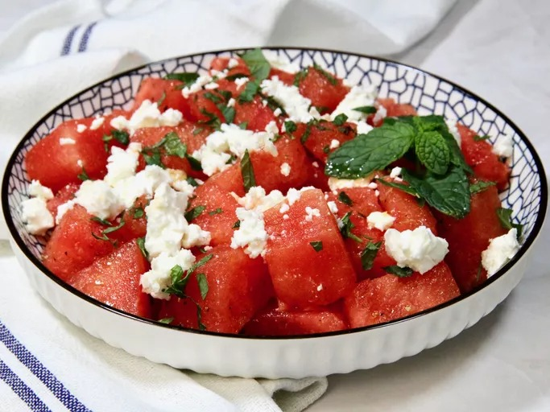

Summer Salad

Description of the recipe
This watermelon, feta, and mint salad shows up often at our house during the summer, especially for cookouts. The quality of the olive oil and feta cheese is important, so go ahead and splurge a little. It’s refreshing, loaded with sweet and salty flavors, and takes minutes to make.
Ingredients
- 1 (3 pound) watermelon, cut into 1-inch cubes and chilled
- 1/4 cup extra virgin olive oil
- 2 tablespoons lemon juice
- 1 teaspoon freshly grated lemon zest
- 1/2 teaspoon kosher salt
- freshly ground ground black pepper to taste
- 4 ounces feta cheese, coarsely crumbled
- 1/4 cup chopped fresh mint leaves
Directions
- Place the chilled watermelon cubes in a large bowl.
- Whisk olive oil, lemon juice, lemon zest, kosher salt, and black pepper together in a small bowl.
- Just before serving, drizzle dressing over chilled watermelon, and toss gently. Sprinkle feta cheese and mint over the watermelon, but do not mix in. Serve immediately.